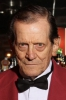

Country:United States, 144 minutes
Spoken languages:English
Genres:Horror, Thriller
Director(s):Stanley Kubrick
Writer(s):Stanley Kubrick, Stephen King, Diane Johnson
Video Codec:Unknown
Number: 712


Certification:R
Storyline:
Jack Torrance accepts a caretaker job at the Overlook Hotel, where he, along with his wife Wendy and their son Danny, must live isolated from the rest of the world for the winter. But they aren't prepared for the madness that lurks within.
Cast: 


Medium: UHD + BD,
Loaned: No
Aspect ratio: Unknown